Cuentos con moraleja para niñosPrimeras páginas
Dedicatoria
Dedicado a Bobby, Johnny y Eddie Somerset.
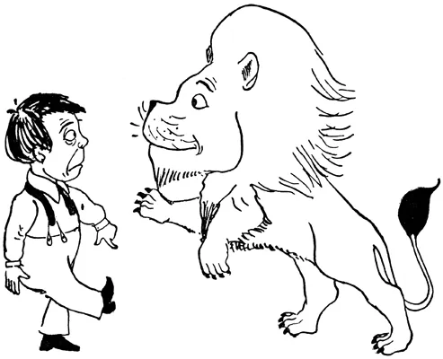
Introducción
Al preguntarle un lector si los versos contenidos en este libro eran verdad.
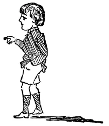
¿Que si es cierto? No es verdad.
Y si lo fuera, ¡qué calamidad
para nosotros, en realidad,
que casi todo el día, en efecto,
hacemos algo no muy correcto!
Porque, si así fuera, de cierto
hace tiempo estarías muerto,
ni habría yo llegado a escribir
los nobles versos que ves lucir,
ni B. T. B. llegado a dibujar
lo más lindo que pudiste mirar.
H. B.
Jim
Que se escapó de su niñera y fue devorado por un león.
Había un niño llamado Jim;
los suyos lo mimaban sin fin.
Té le daban, tortas, mermelada
y jamón delicioso en tajada,
bombones con relleno rosado,
triciclitos en que andar montado,
y
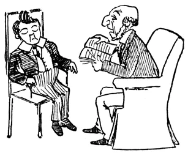
cuentos enteros le contaban,
y aun al zoo lo llevaban;
mas allí lo alcanzó el sino atroz
que ahora te cuento a viva voz.
Lo sabes (o lo debes saber,
pues muchas veces te lo hice ver):
que a un niño nunca se le consiente
dejar a su niñera entre la gente.
Pues esa era de Jim la flaqueza:
si podía, se iba con presteza;
y en aquel día de mal agüero
¡soltó la mano y salió ligero!
Ni una vara anduvo cuando...
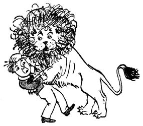
¡Zas!
Boca abierta, un león saltó,
y hambriento a devorar empezó
al niño, y por los pies comenzó.
Figúrate qué sensación
si los dedos, y luego el talón,
y, poco a poco, las espinillas,
tobillos, pantorrillas, rodillas,
son comidos, bocado a bocado.
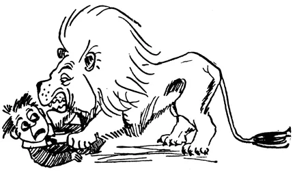
¡Con razón Jim lo ha detestado!
¡Con razón gritó «¡Eh!» el chiquito!
Oyó el honrado guardián su grito
y, aunque muy gordo,
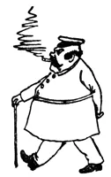
casi corrió
y al caballerito socorrió.
«¡Ponto!», ordenó al acercarse
(que así solía el león llamarse),
«¡Ponto!», gritó,
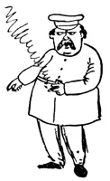
con fruncido ceño:
«¡Abajo, señor! ¡Suelte al pequeño!».
El león, de golpe, se detuvo,
y el fino bocado no retuvo,
y a su jaula volvió, de mal grado,
gruñendo de rabia, defraudado.
Mas el honrado guardián, sobre Jim
inclinado,
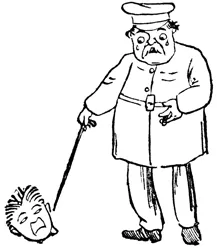
vio borroso al fin.
Ya a la cabeza el león llegó:
¡y el desdichado niño murió!
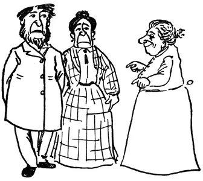
La niñera a los padres fue a contar,
y su inquietud no sé expresar.
Su madre, secándose el llanto,
dijo: «Bueno... no me causa espanto.
¡Nunca hizo lo que se le ordenó!».
Su padre, que nunca se alteró,
pidió a los niños, con voz estable,
mirar de James el fin miserable
y a la niñera nunca soltar,
por miedo a algo peor encontrar.
Henry King
Que masticaba trozos de cuerda y fue segado antes de tiempo entre terribles agonías.
De Henry King, el defecto cruel
era
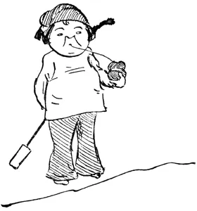
mascar trozos de cordel.
Al fin tragó un poco, que, al bajar,
por dentro en feos nudos se fue a atar.
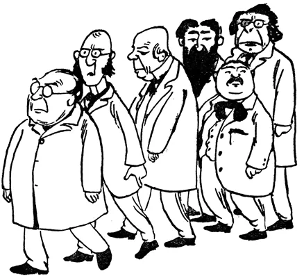
Médicos de lo más afamados
fueron de inmediato llamados;
y, al llegar,
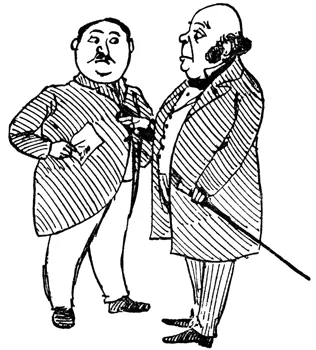
cobrando la factura,
dijeron: «El mal no tiene cura.
Henry muy pronto morirá».
Sus padres, junto a la cama, ya
lloraban su muerte anticipada,
y Henry, en su última bocanada,
gritó:
«¡Oh, amigos, aprendan de mi pena,
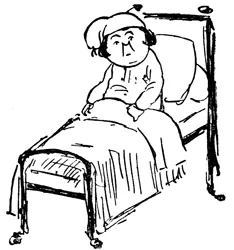
que desayuno, almuerzo, té y cena
es cuanto el cuerpo humano requiere...».
Y en eso el mísero niño muere.
Matilda
Que decía mentiras y murió quemada.
Matilda mentía tan atroz
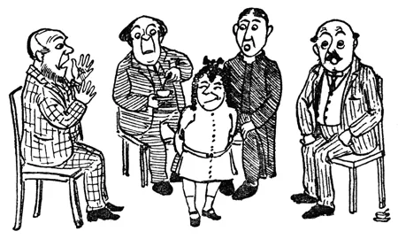
que uno abría los ojos, sin voz.
Su tía, desde su tierna edad
estricta siempre con la verdad,
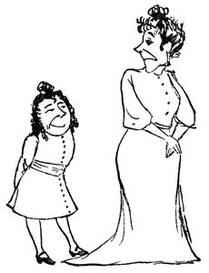
intentó creerle a Matilda:
el esfuerzo casi la liquida,
y la mataba, de no ser
porque este achaque supo ver.
Pues una vez, al caer el día,
Matilda, a quien el juego aburría,
y, al verse sola, a hurtadillas
fue
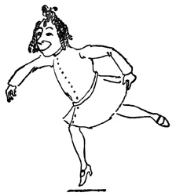
al teléfono en puntillas
y llamó a los nobles bomberos
de Londres, que acudieran ligeros.
En una hora, la gallarda gente
por doquier se volcaba en torrente,
de Putney, Hackney Downs y Bow;
valiente y ardiente, galopó,
rugiendo por la ciudad entera:
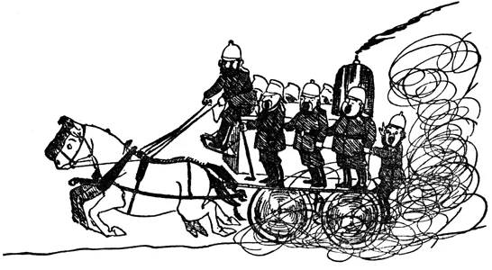
«¡La casa de Matilda: una hoguera!».
Al viva británico y sonoro
de la turba frenética, en coro,
metieron por veinte vidrieras
del salón de baile escaleras,
y, con celo peculiar, empaparon
los cuadros que por la casa hallaron,
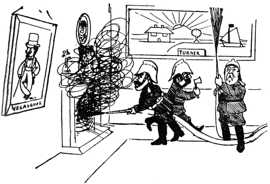
hasta que de Matilda la tía
les mostró que nadie los pedía,
y aun así tuvo que pagar
¡para hacer a los hombres marchar!
* * *
Sucedió que, a las pocas semanas,
su tía fue al teatro con ganas
a ver la obra interesante, ¡ay!,
La segunda señora Tanqueray.
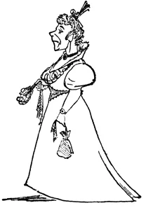
Negó a su sobrina la función
tan amena: justa privación,
sabia, en castigo a su mentir.
Esa noche, ¡fuego!: ¡había que oír
a Matilda gritar y chillar,
y aullar, y la ventana alzar,
llamando a la gente que pasaba
(el calor, que veloz aumentaba,
la instaba a ganarse su confianza):
¡todo en vano, sin esperanza!
Pues cada vez que «¡Fuego!» gritaba,
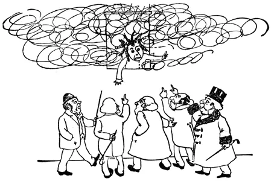
solo «¡Mentirosilla!» escuchaba.
Y así, cuando la tía volvió,
Matilda, y la casa: ¡todo ardió!
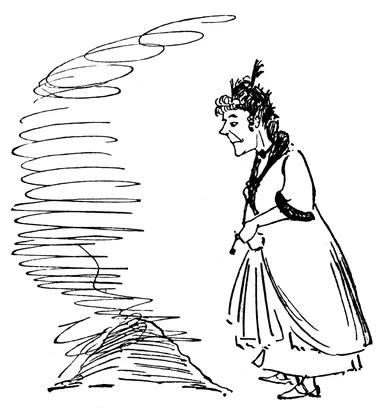
Franklin Hyde
Que se revolcaba en la mugre y fue corregido por su tío.
A Franklin Hyde su tío ha pillado
de parranda en la porquería;
lo zarandeó de lado a lado
y
le pegó hasta que dolía.
Gritó, con golpe final, ruidoso:
«¡Toma
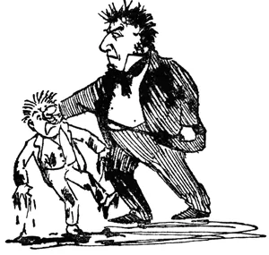
eso, niño perdido!
¡Por jugar con barro asqueroso
como si un juguete hubiera sido!».
Moraleja
De Franklin Hyde, por su aventura,
tu tiempo libre aprende a pasar
con limpia alegría, y procura
del barro, cieno y lama escapar,
de toda inmundicia, igualmente;
pero, en cambio, cabe notar:
los niños de ropa corriente
siempre pueden con arena jugar.
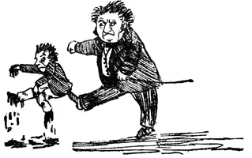
Godolphin Horne
Que fue maldecido con el pecado del orgullo y llegó a limpiabotas.
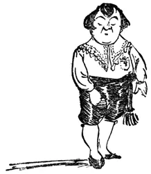
Godolphin Horne, noble y ufano,
despreciaba al género humano,
con todas sus hermanas moraba
do su padre, en Berkeley Square, estaba.
¡Y oh, el chico era orgulloso a muerte!
Ni mano ni venia daba al verte:
burlón, solo asentía
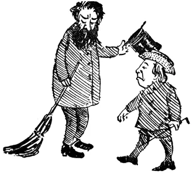
así:
¡cosa más ridícula no vi!
¡Ay, que esos afectados amaños
crezcan en un niño de seis años!
(Esa edad Godolphin tenía.)
La Corte un paje entonces quería,
y así,
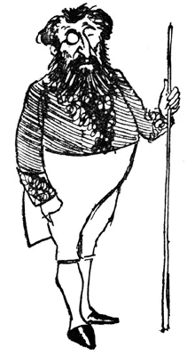
el lord Chambelán Mayor
(el más amable, el hombre mejor)
fue y, con buen talante y conforme,
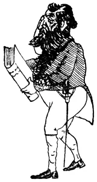
tomó un libro de lo más enorme
(*Personas de calidad
que sirvan a Su Majestad*),
y murmuró, revisando la lista
(por no perder a nadie de vista):
«Pues...
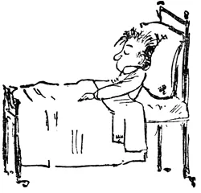
William Coutts con gripe ha caído,
y Billy Higgs, jamás: excluido,
y Guy
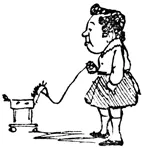
de Vere, joven demasiado,
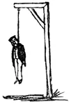
y... ¿no era D'Alton de padre ahorcado?
¡Y en cuanto a Alexander Byng!...
Creo que sé qué hace falta, en fin:
noble, pulcro y devoto del templo...
Vamos... ¿Godolphin Horne, por ejemplo?».
Mas, apenas lo dijo, se oyó
un murmullo que disintió.
Del rey de Islandia el hijo mayor
dijo: «¡Gracias! Yo no, por favor».
La anciana duquesa de Athlone
dijo, con algo agria entonación:
«¡Dudo que él sea lo indicado!».
Y cada obispo lo ha secundado.
Y hasta lady Mary Flood
(tan amable, ¡y oh, cuánta virtud!)
exclamó: «¡No! ¡De ningún modo!
¡Nos haría pequeños del todo!».
«... Bien, bien, bien», dijo el Chambelán,
«¡quién sabe!... Sí, razón tendrán».
Tomó su pluma de oro y diamante
y
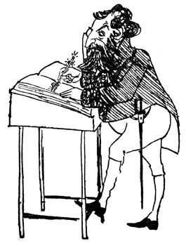
tachó a Godolphin al instante.
Por eso, Godolphin es hoy
el lustrabotas del Savoy.
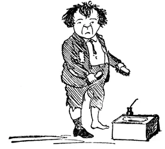
Algernon
Que jugó con un arma cargada y, por errar a su hermana, fue reprendido por su padre.
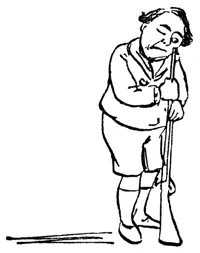
El chico del doctor, Algernon,
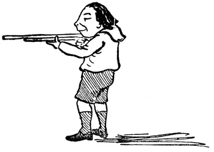
jugaba, cargado el mosquetón.
Hacia su hermana lo apuntó
con gran esmero, mas...
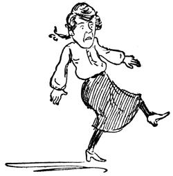
¡falló!
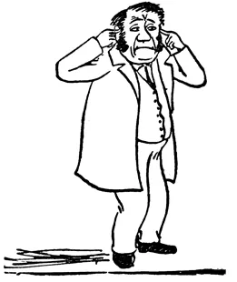
Su padre, cerca, por azar
la fuerte explosión llegó a escuchar,
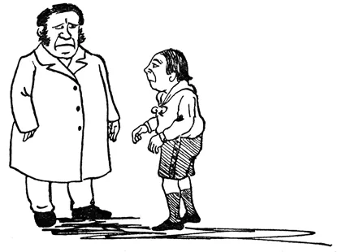
y reprendió a Algernon
por jugar, cargado el mosquetón.
Hildebrand
Que se asustó con un automóvil que pasaba y fue llevado a la razón.
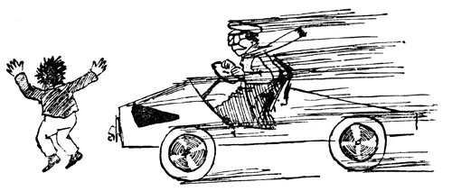
«¡Que me matan! ¿Qué fue, papá?».
«Hijo, un auto pasó por acá,
¡juguete ingeniosísimo es!
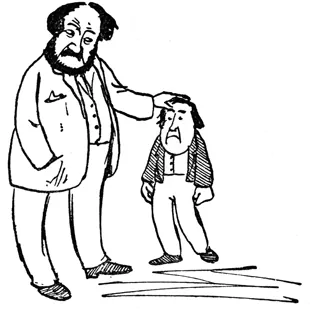
Creado para cautivar
y encantar, mucho más que alarmar
a cualquier niño inglés.
»¿Qué diría tu bisabuelo, que
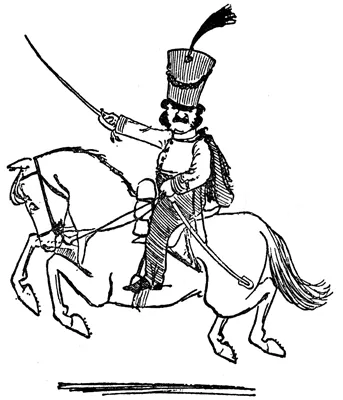
fue edecán del general Brue,
y una pierna perdió en
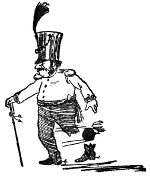
Waterloo,
y
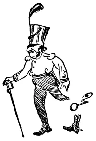
Quatre-Bras,
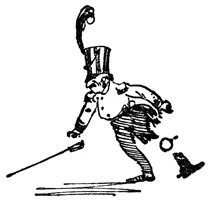
Ligny, ¡mira tú!,
¡y además murió en Trafalgar!...
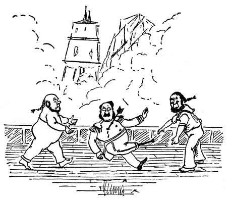
¿Qué habría dicho al escuchar
al bisnieto de miedo chillar
por estar cerca, por azar,
de un auto que no ha de dañar?
¡Pero no te inquietes! ¡Ven, vamos!
¡Al centro,
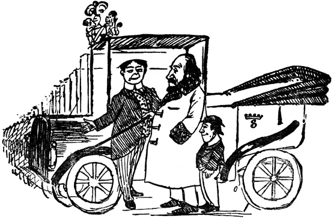
y algunos compramos!».
Lord Lundy
Que se conmovía hasta las lágrimas con demasiada facilidad y así arruinó su carrera política.
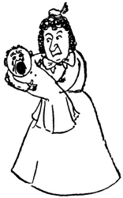
Lord Lundy, desde la niñez,
lloraba en exceso cada vez.
Si su madre, por ejemplo, exclama:
«¡Lundy! ¡Es hora de ir a la cama!»,
brama como un turquito. O si
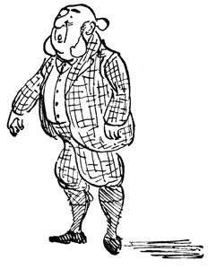
lord Dunquerque, el padre, dice así,
«¡Eh!», con tono de capataz:
«¡Eh, Lundy! ¡Deja al gato en paz!»,
lord Lundy, al soltar el rabito,
lanza tan terrible grito
que al
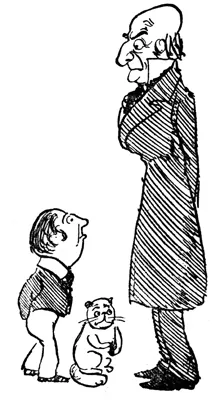
duque, su abuelo, lo mueve
a reprensión severa y breve:
«¡Cuando era yo, señor, pequeñete,
un animal no era un juguete!».
Su tía mayor, que se hizo
esposa de un advenedizo,
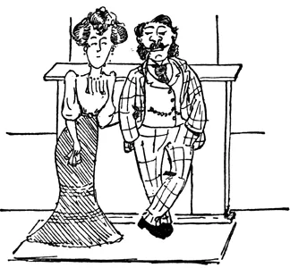
confió a su marido: «¡Maldición!
¡Mocoso miserable y llorón!
¿Por qué no ahogan al renacuajo?».
Sugerencias que, por lo bajo,
no son lo que se espera de quien es
hija de todo un par inglés.
La abuela materna, que tenía
una dignidad u otra, a fe mía
(la Jarretera, o lo que sea;
¡no me acuerdo de todo, ni idea!),
dijo: «¡Oh, quién fuera ágil, para dar
un buen motivo de llorar!».
(¡Vano deseo, ay!, pues ella es
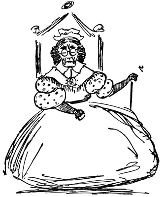
ciega, y de casi noventa y tres.)
El mayordomo, querido y viejo,
pensó... ¡pero mejor lo dejo!
No sé ni me importa lo pensado
por el viejo mayordomo amado.
Opino que todo mayordomo
sepa su sitio, sin asomo
de hacer, noche y día, el papel
del viejo servidor, criado fiel.
Me canso, y tú te cansas: vamos,
¡que el poema en dos lo partamos!
Segundo canto
A lord Lundy entonces le ocurría
lo que a tantos les sucedía:
a los veintiséis, o así, cayó
en política; alguien lo empujó.
Y en tal oficio cobraba
sueldo que su rango demandaba,
y ocupó, por turnos, la cartera
de la India, Colonias y Guerra.
Mas pronto sus amigos dudaban
si era cabalmente el que esperaban.
Y si un diputado se ponía
de pie (como hacen día a día),
«¡Sobre esa contestación...!»,
lord Lundy lloraba a borbotón.
Mentarle un chanchullo inofensivo
le daba un sollozo convulsivo.
Las revelaciones (¡pesadillas!)
lo hacían caer de rodillas,
y gimiendo, cual niño llorón:
¡sus colegas perdían la razón!
Fue de un puesto a otro, hacia atrás,
de mil quinientas, todo lo más,
a ochocientas, a seiscientas, y en
seguida, ¡a curador del Big Ben!...
Y, al fin, la amenaza (¡vaya brete!)
de echarlo fuera del Gabinete.
El duque, anciano abuelo, sufría
la deshonra, hasta que no podía.
Sus menguantes fuerzas reunió,
al mozo a Brackley Towers citó
y le habló así, amargado:
«¡Señor! ¡Nos ha decepcionado!
Pensábamos que usted sería
primer ministro, tras tres, un día:
acciones, vendidas; prensa, untada;
la clase media, ya preparada.
¡Así...! ¡Ni hablar puedo! ¡A gobernar
Nueva Gales del Sur! ¡A volar!».
* * *
Gimió el viejo patriota y murió:
¡cielos, cómo lord Lundy lloró!
Rebecca
Que daba portazos por diversión y murió miserablemente.
Maña que a todos da rechazo
en las niñas es el portazo.
De un
rico banquero
la hijita
(Palace Green, Bayswater, su casita)
Rebecca Offendort se llamaba,
y al deporte furioso se daba.
Iba, con propósito pleno,
¡y daba un portazo como un trueno!
por dar al tío Jacob un susto.
No era mala, si he de ser justo,
sino grosera y desbordante:
una niña harto exasperante...
Sucedió que había un busto
de mármol de Abraham, justo
sobre la puerta que, con esmero,
iba a azotar el tierno cordero,
¡y cayó! ¡La dejó aplastada!
¡Tumbada! Quedó así, retratada.
* * *
Su sermón fúnebre (prolongado
y seguido de un canto sagrado)
sus virtudes nombró, es verdad,
mas se extendió en su maldad,
mostró el fin atroz, a grandes trazos,
de quien goza dando portazos.
* * *
Los niños, traídos a escuchar
el cuento atroz, de todo lugar,
muy impresionados, y sin más,
juraron: ¡portazos, nunca más!
(Tal como a menudo, tiempo atrás.)
George
Que jugó con un juguete peligroso y sufrió una catástrofe de considerables dimensiones.
Cuando la abuela de George oyó
que George como un oro se portó,
le prometió, una tarde, conforme,
que le compraría un GLOBO enorme.
Y
así lo hizo; mas, al llegar,
de una vela en la llama fue a dar,
y, siendo de clase peligrosa,
¡voló
con detonación ruidosa!
¡Luz apagada! ¡Vidrio quebrado!
¡De humo hediondo el cuarto colmado!
Y en lo oscuro, gritos y chillidos
a timbres eléctricos unidos,
y caer de muros, y gemidos,
y crujir, cual de huesos partidos,
y alaridos; y, cosa aún más fiera,
¡comenzó a caer la casa entera!
Se meció, temblando, vaciló,
y en la calle, abajo, se estrelló
(que resultó ser Savile Row).
* * *
Llegó ayuda; murieron, ¡horror!,
la prima Mary,
Fred, el menor,
lacayos
(ambos),
palafrenero,
el que limpiaba el billar entero,
el capellán y
la despensera.
Y temo, de terrible manera,
que el chef, monsieur Champignon,
será
sordo ya, sin remisión,
y sus dos ayudantes,
igual;
y George, que tuvo culpa parcial,
recibió, y oírlo te aqueja,
un feo chichón
tras la oreja.
Moraleja
La moraleja es que al pequeñete
no den peligroso juguete.
Charles Augustus Fortescue
Que siempre hizo lo correcto y así acumuló una inmensa fortuna.
Charles Augustus Fortescue fue
el niño más bueno que he visto, a fe.
Jamás perdió gorra, ni rompió
medias ni delantal que vistió;
comiendo pan, miga no dejaba;
por las sumas loco se mostraba,
aunque prefería, al estudiar,
la voz latina analizar;
si le era posible, sin demora
se informaba dos veces por hora.
Y, ¿hallar poco sabrosa
la grasa de cordero? ¡Otra cosa!
En la mesa de su padre, a diario,
rogaba, de modo voluntario,
le dieran, si no les molestaba,
lo más grasiento que se encontraba.
Su madurez no fue a desmentir
lo que la infancia hizo presentir.
En público, siempre procuraba
un juicio amplio, que todo abarcaba;
en privado, nadie lo excedía
en fama de quieta cortesía.
Subió enseguida en su carrera,
casó, antes que cuarenta tuviera,
con Fifi,
única hija del señor
Bunyan, de Aberfylde primer lord.
Así, riquísimo quedó,
y una mansión espléndida alzó
que se llama
donde vive aún, con lujos mil,
mostrando qué puede ser cualquiera
con
SOLO HACER LO QUE DEBIERA.
Hasta aquí las primeras páginas. Para seguir leyendo, descarga el libro completo, gratis:
¿Cuál elegir? El PDF se abre directo en el navegador, en cualquier celular o computador. El EPUB queda en Descargas y se lee con una aplicación de lectura (Google Play Libros en Android, Libros en iPhone, Kindle o Kobo), que deja agrandar la letra.